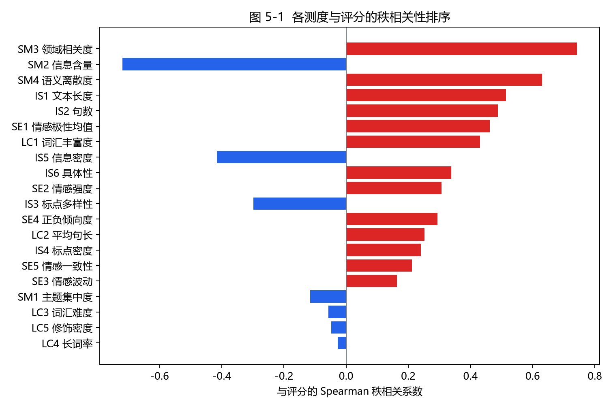
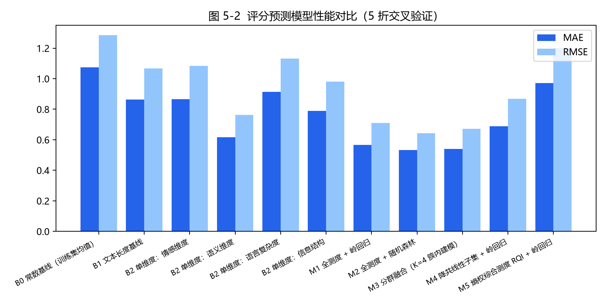
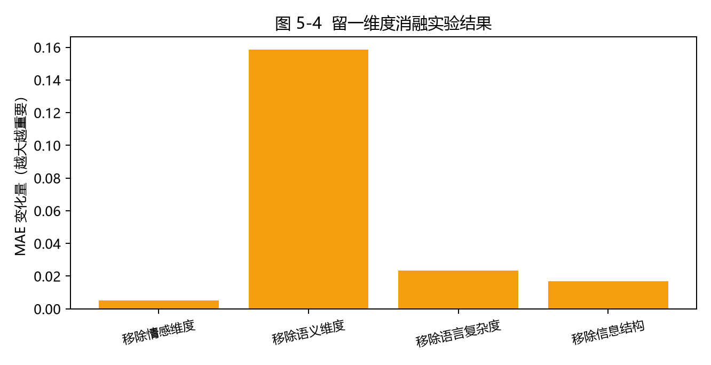
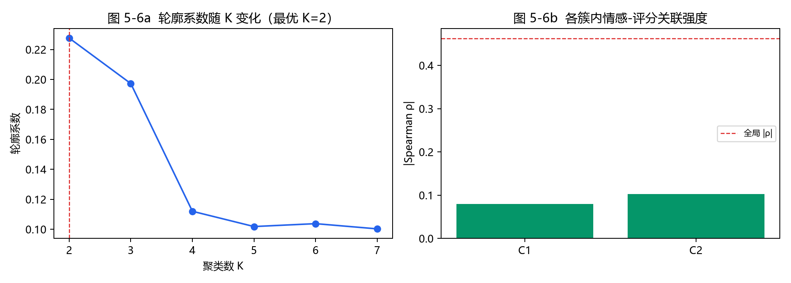

语料 DBR-3K：3 000 条中文图书评论，1—5 星评分，8 个图书类别，固定随机种子可一键复现。
四个维度分别回答：态度如何（SE）、说了什么（SM）、怎么说（LC）、以什么形式说（IS）。
| 维度 | 测度编号 | 内容 | 最强测度 |ρ| |
|---|---|---|---|
| 情感维度 | SE1–SE5 | 极性均值、情感强度、情感波动、正负倾向度、情感一致性 | 0.462（SE1） |
| 语义维度 | SM1–SM4 | 主题集中度、信息含量、领域相关度、语义离散度 | 0.742（SM3） |
| 语言复杂度 | LC1–LC5 | 词汇丰富度、平均句长、词汇难度、长词率、修饰密度 | 0.431（LC1） |
| 信息结构 | IS1–IS6 | 文本长度、句数、标点多样性、标点密度、信息密度、具体性 | 0.514（IS1） |
5 折交叉验证，超参数固定、不针对测试集调优。完整数据见仓库 results/tables/t5_regression.csv。
| 模型 | 特征数 | MAE | RMSE | R² |
|---|---|---|---|---|
| B0 常数基线 | 0 | 1.075 | 1.286 | −0.001 |
| B1 文本长度基线 | 1 | 0.863 | 1.067 | 0.311 |
| B2 单维度：语义维度 | 4 | 0.616 | 0.763 | 0.648 |
| M1 全测度 + 岭回归 | 20 | 0.567 | 0.710 | 0.695 |
| M2 全测度 + 随机森林 | 20 | 0.533 | 0.642 | 0.751 |
| M3 分群融合（K=4 簇内建模） | 20 | 0.539 | 0.671 | 0.727 |
| M4 降共线性子集 + 岭回归 | 14 | 0.689 | 0.869 | 0.543 |
| M5 熵权综合测度 RQI + 岭回归 | 1 | 0.971 | 1.201 | 0.127 |




结论 1文本测度对评分的解释存在「投入度—评价」双通道；认真写的评论无论好评差评，在语言上投入都更多，仅用情感得分做评分预测会损失大量信息。
结论 2语义维度是信息贡献最大的维度（移除后 MAE 上升 27.98%），情感维度在联合建模中提供的边际信息有限。
结论 3三个负结果同样有价值：长词率不显著、熵权综合指数 RQI 失效、简单删除高共线性测度会损失精度——它们为同类研究划定了边界条件。
方法论提示对已含标签信息的测度空间做聚类，簇内关联会整体塌缩；「聚类 + 簇内回归」类融合方法的增益来源需要重新审视。
全部实验固定随机种子 20260517，普通 CPU 约 1.5 分钟跑完。
pip install jieba numpy pandas scipy scikit-learn matplotlib snownlp python code/corpus_builder.py --n 3000 # 生成 DBR-3K 语料 python code/experiment.py # 抽取测度 + 跑 E1–E9 + 出图表 # 或一键： python code/run_all.py
论文、代码、语料、全部实验结果均可直接下载。
📄 论文正文（Word 版，含封面 / 摘要 / 目录 / 参考文献）.docx · 334 KB 📝 论文正文（Markdown 源稿，约 1.6 万字）.md · 68 KB 📊 关键结论摘要.json 🧾 测度明细表（3 000 行 × 25 列）.csv 📚 DBR-3K 语料.csv · 3 000 条 🔬 测度体系实现（4 维度 20 项测度）.py 🧪 实验主程序（E1–E9）.py 📘 仓库说明（README）.md